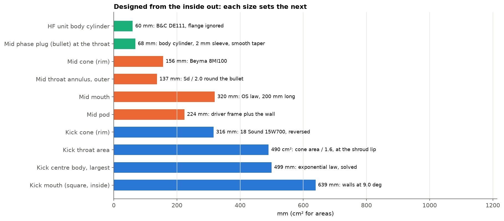
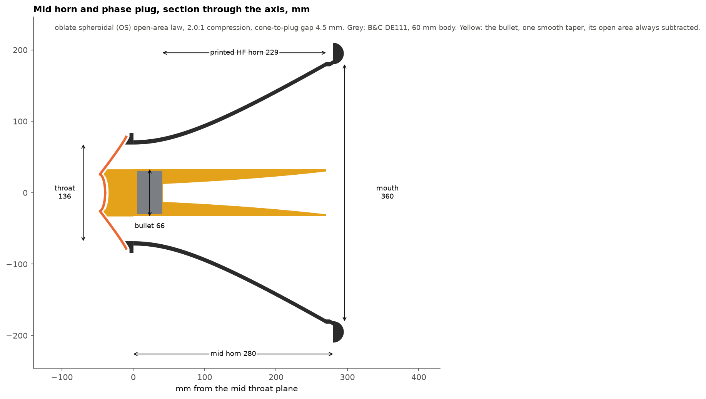
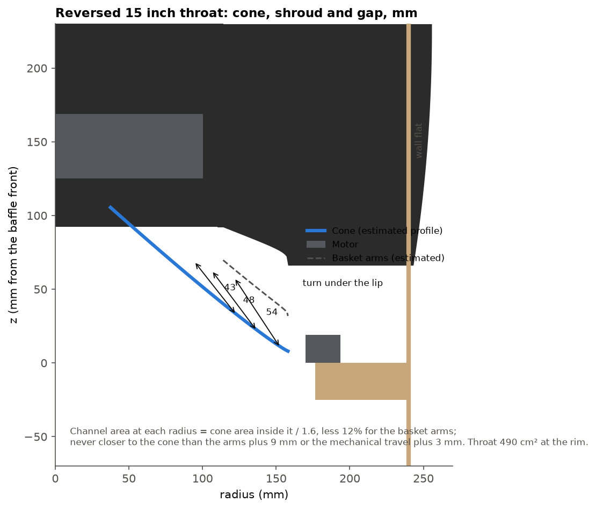
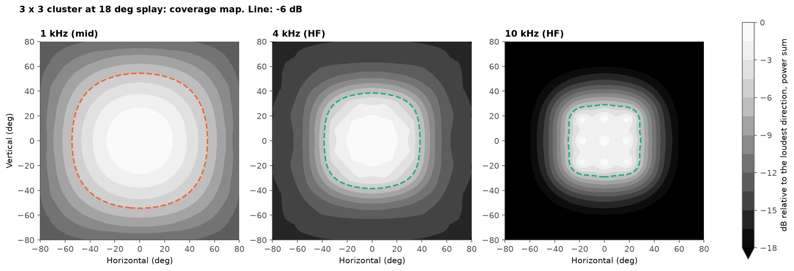

Design
Sized from the inside out: the HF unit's body sets the mid phase plug, the plug sets the smallest mid cone and the throat, the mid horn and its pod set the kick's centre body, and the centre body and the walls set the kick horn. Every inner body is subtracted from its horn's area.

The reference: Funktion-One Res 2
The Res 2's selling point is a horn-loaded 8 inch cone that carries everything from 250 Hz up to the compression driver, so the voice, including the 2 to 4 kHz consonant band, stays on one paper cone. Funktion-One's Res 4 and 5 run the same 8 inch to 5.7 and 7.5 kHz with their Axhead loading device. Sunflower keeps the 250 Hz low crossover and pushes the mid as high as the FEM allows: 4.0 kHz with a 66 mm bullet round a B&C DE111 (see mid and the validation page).
Mid horn and its phase plug
Beyma 8MI100 in an oblate spheroidal (OS) horn, 320 mm mouth, 200 mm long, 2.0:1 compression. The phase plug is one smooth bullet: its nose follows the cone 4.5 mm away, it holds the B&C DE111's 60 mm body, and it tapers to the printed HF horn's 141 mm mouth just inside the mid mouth. The wall is solved so the open area (wall minus bullet) follows the law exactly. The mid sits in a sealed 3.3 litre printed pod, separate from the kick motor.


Felt under the bullet
The air between the cone and the bullet nose is a radial cavity closed at the centre. Half a wavelength across the bullet radius puts a deep notch near 3.6 kHz, right where the mid hands over. Both the network model and the FEM show it. A felt layer on the underside of the nose damps it; the CAD has a 3 mm felt part recessed into the nose so the designed gap is kept.
| Felt loss factor | FEM notch depth (dB) | Network notch depth (dB) |
|---|---|---|
| 0.00 | 27.4 | 22.1 |
| 0.05 | 20.9 | 6.4 |
| 0.10 | 17.9 | 3.5 |
| 0.20 | 15.7 | 2.1 |
| 0.30 | 14.7 | 1.5 |
| 0.50 | 14.3 | 1.3 |
| 0.80 | 14.6 | 1.2 |
Kick horn and the reversed 15 inch
18 Sound 15W700, reversed: the flange sits on the front of the baffle, the motor points into the horn and the cone's concave side faces a sealed 22 litre chamber. The centre body's underside is a shroud over the cone, outside the basket arms. The gap at each radius makes the channel area equal to the cone area inside that radius divided by 1.6, so every ring of the cone sees the same compression; it never comes closer than the basket arms plus 9 mm or the cone's mechanical travel plus 3 mm. The air leaves at the rim, turns under the shroud lip and runs forward through a 490 cm² throat.

From the throat forward the body's radius is solved from the exponential law, so the open area between the four walls, less the corner fillers, and the body follows it all the way to the square mouth. The body swells to 499 mm, holds the kick motor, the mid pod and the mid horn, and meets the mid horn's outside at the kick mouth.


The horn profiles are checked against the solid model: the kick's air volume was built in CAD (walls, fillers, body, standoffs and vanes) and sliced at 60 planes. It matches the model to 0.152%, the mid to 0.59% (the worst point is the HF cable hole). The support vanes block at most 2.1% of the kick horn.
Measure before printing. No maker publishes cone sections. The 18 Sound 15W700 geometry here is estimated from dimensioned drawings: cone profile and neck position, spider diameter, basket arm envelope. The shroud and the bullet nose must be checked against a real driver.
Cabinet and splay
Single-ply 18 mm birch. The four horn walls are the outside of the box: four identical trapezoids with compound mitres, from a 675 mm square back to a 675 mm square mouth, 600 mm deep. The two sides are angled; the top and bottom are flat, with sealed wedges inside them so the horn itself is a square frustum. The mid horn ends flush inside the kick mouth.
The splay between boxes is twice the wall angle, 18 degrees. It was chosen against the mid's coverage: about 0.8 of its -6 dB beamwidth from 1 to 4 kHz, the point-source rule Funktion-One also uses when it flies Res tops.
